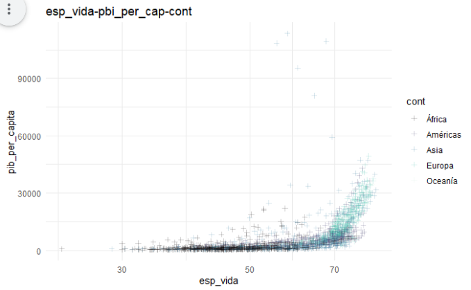
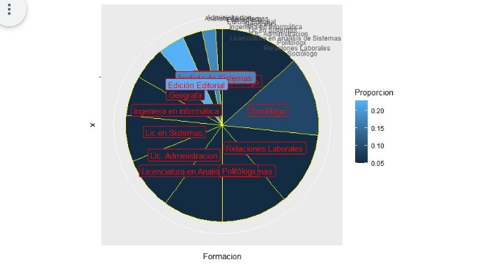
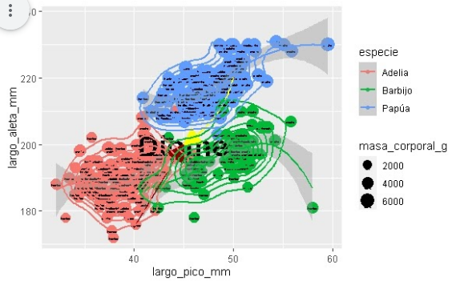
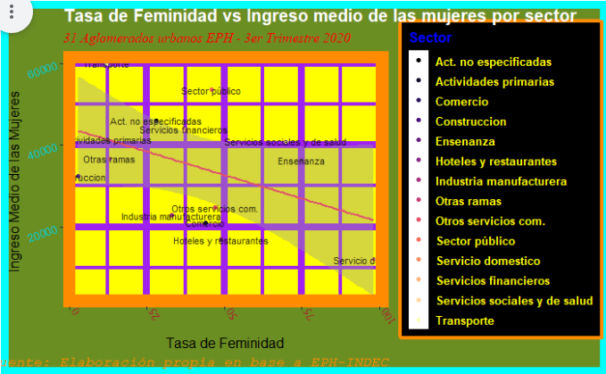
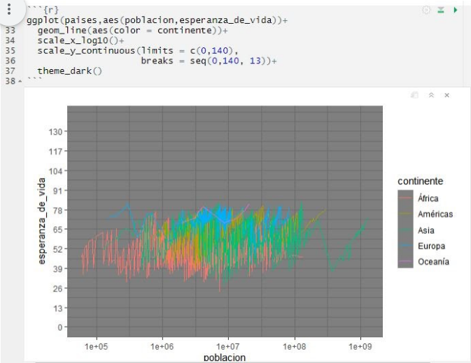

Cohorte 2021
Trabajos finales
Trabajos finales utilizando Tableau o RMarkdown y ggplot2.
Concurso el gráfico más feo (por orden alfabético)
Agustín Osés
library(dplyr)
library(ggplot2)
library(readr)
library(tidyverse)
library(readxl)
library(datos)
library(png)
library(patchwork)
petroleo <- readPNG("datos/petroleo.png",native = TRUE)
torres <- readPNG("datos/torres.png",native = TRUE)
aviones_2 <- aviones %>%
group_by(anio) %>%
summarise(mean(asientos))
colnames(aviones_2) <- c("anio", "promedio")
ggplot(aviones_2, aes(x=anio, y=promedio)) +
theme_dark()+
theme(plot.title = element_text(size = 15, colour = "brown", face = "italic"), plot.subtitle = element_text(size = 12, colour = "yellow", face = "italic"), plot.background = element_rect (fill = "violet"), plot.caption = element_text(size=9, color = "green"))+
theme(panel.grid.major = element_line(color = "grey", size = 1, linetype = "dashed"))+
theme(axis.title = element_text(colour = "orange", face = "italic", size = 20))+
theme(axis.text.x = element_text(colour= "red", angle = 60,))+
theme(axis.text.y = element_text(colour= "red", angle = -45,))+
labs(x= "año", y = "asientos Promedio", title = "Cantidad Promedio de Asientos Por Avión Según Año de Fabricación", subtitle = "capacidad promedio de Aeronaves y su relación con hEchos históricos", caption = "fuente: paquete datos, DATASET Aviones, según registros de la FAA (Administración Federal de Aviación, EEUU") +
geom_rect(aes(xmin=1956,xmax=1973,ymin=-0,ymax=250), fill="Brown", alpha=1)+
geom_rect(aes(xmin=1973,xmax=2001,ymin=-0,ymax=250), fill="Yellow", alpha=1)+
geom_rect(aes(xmin=2001,xmax=2013,ymin=-0,ymax=250), fill="Green", alpha=1)+
geom_point(aes(size=promedio), colour="blue", shape=17)+
geom_vline(aes(xintercept=1973), colour=1, size=3)+
geom_vline(aes(xintercept=2001), colour=2, size=3)+
geom_smooth(size=3, colour ="Grey")+
inset_element (p= torres, left = 0.9, bottom = 0.15, right = 0.7, top = 0.50)+
inset_element (p= petroleo, left = 0.25, bottom = 0.65, right = 0.40, top = 1)
Alexander Sothmann
Gráfico enviado al concurso
library(tidyverse)
paises <-datos::paises
paises_filtrado <- filter(paises,anio>=2000 & anio<=2021)
ggplot(paises, aes(x = poblacion, y = esperanza_de_vida))+
geom_point(aes(size = pib_per_capita))+
scale_size_area(max_size = 15, guide = NULL) +
scale_x_log10()+
geom_smooth(method = "lm", se = FALSE, aes(color = anio))+
facet_wrap(~continente)+
labs(title = "Paises del mundo",
subtitle = "Año 2000 a 2021",
caption = "El tamaño de cada circulo representa el producto bruto interno por cada habitante.",
x = "poblacion",
y = "Life expectancy",
color = "")
Gráfico 3D extra
library(scatterplot3d)
paises <-datos::paises
x <- paises$poblacion
y <- paises$esperanza_de_vida
z <- paises$anio
scatterplot3d(x, y, z, pch = 19, color = "blue")
Ana Clara Suiffet
ggplot(provincia_porc, aes(x=1, y=percentage,fill=provincia)) +
geom_bar(stat="identity") +
scale_fill_manual(values=rainbow(24)) +
geom_text(aes(label = paste0(round(percentage,1),"%")),
position = position_stack(vjust = 0,5)) +
coord_polar(theta= "y") +
theme_void()+
labs(
x = "Provincias Argentinas",
y = "Porcentaje de Puntos Digitales",
title="Porcentaje de Puntos Digitales por Provincias",
subtitle = "Intento n°99247892 con lo que Yani detesta: gráfico de torta en 3D o 45° y colorinche",
fill = "Porcentaje",
caption = "Fuente: mapa de Puntos Digitales https://mapa.puntodigital.gob.ar/")

Analia Savino

Juan Videla

Manuel Emilio Lopez
 ### Bianca Vallejos
### Bianca Vallejos

Juan Pablo Costa

Mercedes Araujo

Erika Lucena

Facundo Monti

Federico Aramburu
 ### Federico Gonzalez
### Federico Gonzalez

Federico Santoro

Hernan Costa

Irene Lindenboim

Julieta Couto

Luciano Tincani y Pamela Sarco

Marcela Almeida
Marcelo Perazzo

Martina Pesce

Martin Saralegui

Marcela Almeida

Mercedes Laurenza
Nicolas Capria

Nicolas Natali

Nicole Moscovich

Noelia Andrada

Paula DAlessandro

Samantha Vaccari

Sara Reidel

Walter Martinez

Yamila Albornoz

Yanil Hepp